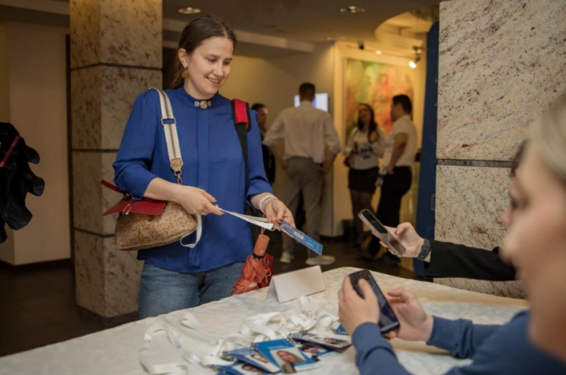
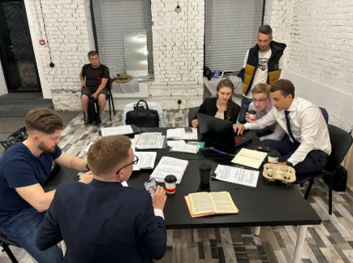

СФОНД ПОДДЕРЖКИ И РАЗВИТИЯ СОЦИАЛЬНЫХ И СПОРТИВНО-ПАТРИОТИЧЕСКИХ ИНИЦИАТИВ «ЛИДЕР»
Санкт-Петербург по праву считается молодежной столицей России - сотни образовательных организаций высшего и среднего-профессионального образования, тысячи молодежных сообществ, общественных и волонтерских объединений вовлекают в социальную активность и мероприятия государственной молодежной политики жителей из всех районов города. Но развитие социальных сетей создало тенденцию на появление «микросообществ», чья деятельность выпадает из внимания институциональных организаций. Для повышения качества реализации инициатив на местах важно вовлекать и поддерживать молодых лидеров, которые еще не задействованы в городской повестке.
«Лидеры Петербурга» - это всесторонняя программа вовлечения молодежи города в социальную активность. За 5 месяцев 2024 года, 200 участников (молодежь Санкт-Петербурга, в возрасте от 18 до 35 лет, лидеры неформальных местных сообществ) прошли обучение, спроектировали и начали реализацию собственные мероприятий, направленных на повышение качества жизни петербуржцев. Программа прошла в 3 этапа: 1. Отбор участников (из 350 заявок, на основании автобиографических справок и эссе на тему «Как я могу сделать свой город лучше», будут определены участники программы); 2. Образовательный трек (5 встреч с состоявшимися управленцами в формате "Диалог на равных" и 5 мастер-классов по темам "Гражданские медиа", "Ораторское искусство", "Местное самоуправление", "Управление проектами" и "Развитие сообществ"); 3. Реализация инициатив (в проектном офисе участники получили проектную, медиа и юридическую поддержку при проведении не менее чем 20 социальных мероприятий на территориях муниципалитетов Петербурга).
В ходе программы участники приобрели необходимые знания и навыки для реализации устойчивых социальных проектов, контакты для их ресурсного обеспечения и развития. Постоянное освещение в социальных сетях всех активностей программы и деятельности участников, дополнительные мероприятия в формате открытых дискуссий, инициация и создание инфраструктуры работы их собственных сообществ, позволили в долгосрочной перспективе получить высокие результаты в социальной сфере, а также вовлечь в социальную деятельность не менее 2000 молодых петербуржцев через просмотр видео-контента.
 Количество благополучателей: 200 человек.
Количество волонтеров: 10 человек.